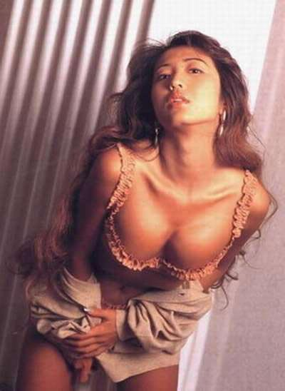
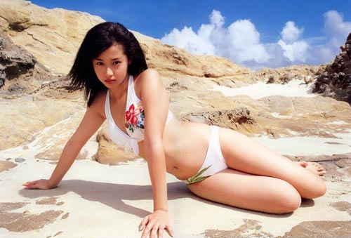

饭岛爱，日本艺人、前AV女优，1972年10月31日出生东京都江东区龟户，于1992年出道踏入日本演艺圈。拍摄过多部AV影 片，2007年3月因健康问题退出娱乐圈。演员饭岛爱(36)于2008年12月24日在市内的家中被发现死亡，初步调查警察认为有自杀的可能，具体原因 正在调查之中。
吉泽明步，1984年3月3日出生于日本东京，AV女优，AV片商MAX-A旗下艺人，2003年出道，入行迈入五年后，转到Maxing旗下。因其外貌酷似香港艺人邓丽欣而使她在华南地区声名大噪。
苍井空，近两年来，在中国和日本最受欢迎的AV女演员之一。以清纯可爱的形象和非常出众的演技著称。表演及其到位，可以看得出来她对男性心理有 着很深的认识。其敬业程度不亚于当年风靡亚洲，现已转行的武藤兰。2005年，以一部扮演小公主的成人影片走红。近年来拍摄了大量高画质，高水准的作品， 已逐渐成为日本AV界最受欢迎的女艺人。
松岛枫，日本福冈县人，是一名知名AV女优。2002年出道，2007年引退。历经五年AV生涯至今仍是许多影迷投票前几名的高人气女优。
小泽玛利亚，也写作小泽玛莉亚、小泽玛丽亚，日本的成人情色AV女优，是很多男人心目中的性感女神。加拿大和法国混血的小泽玛利亚，有着美丽的混血脸孔，加上36E的丰满上围，拥有“混血美女”、“性爱机器”等封号，是很多男性心中的性感女神。
2009年7月，据小泽所属经纪公司透露，小泽玛利亚拟进军中国内地市场，公司将为其设计一系列打开内地市场的计划，目标主要锁定内地的演出市场，而首轮攻势将由歌曲开始。
红音莹(HotaruAkane)于1983年10月25日出生于日本大阪府，红音莹原名秋月杏奈， 红音莹2004年出道一年后才改名为红音莹。2005年获得最佳新人奖，2006年获得AVOpen年度艳技大赏第5名。
自从改名后红音莹的形象也彻底颠覆，从清纯少女变成野性荡妇。只要看过红音莹AV的朋友，都会对红音莹喷泉般的“潮吹”有深刻的印象。随时随地，红音莹都可以在瞬间变成一个高潮不断的喷水机器。
由于对于拍片来者不拒，所以红音莹的AV作品量多而杂，AV作品一共37部。

北原多香子(1985年12月6日-)，是日本AV女优，出生于神奈川县。曾在2004年2月使用另一艺名相原优拍摄过SM情节之AV影片《爱奴饲育调教连续オルガ闷绝M娘》。北原多香子以巨乳著称，著名的写真网站“Graphis”曾找她拍照片。
AkaneSakura樱朱音，84年的，这种小个子美女巨乳系，还是相当受欢迎，因为毕竟身高自卑的男性大有人在，看着长腿美女系列，总有一种够不着，鞭长莫及的淡淡的哀伤，不过樱朱音的表演，各方面表现是相当不错的，有实力当然有魅力，身材和样貌不是一般的完美。

朝美穗香(みひろ，1982年5月19日—)是一名日本的AV女优，中文网络社群仍习惯用日文假名称呼みひろ，原为知名写真女星，在2005年 移籍到AV界时曾引起不小轰动，和AliceJapan与Max-A两大影视伦理监视委员会系龙头公司签订长达两年二十四部的片约，是既高树玛莉亚之后最 大片量签约者。并创下2005年该两公司的销售纪录。也是当年许多AV专门杂志的年度新人奖得主。
白石麻梨子1985年09月29日出生于日本北海道，AV女优，身高163cm，F罩杯的胸围在日本AV届被称为巨乳奶娘。白石麻梨子出道时作 品都是有码片。于2006年开始专攻无码片。白石麻梨子不但有F罩杯的巨乳，丰韵的身材，还有一张略带婴儿般气息的精致五官。由于她性格内向，使得拥有如 此优秀先天条件的白石，一直无法成为一线AV女优。